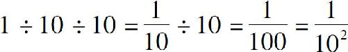
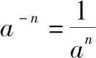

我们继续探讨乘方在代数学里的运算法则．如果我们分别用两个字母来表示底数和指数，那么这样的代数式又会产生哪些运算规则？俗话说，有人的地方就有江湖恩怨，有数的地方就有加减乘除．既然这个指数是作为一个数字被放到底数的右上角，它也就逃脱不了加减乘除的使命．
我们先看一道简单的题目：103 ×104 ＝？我们知道乘方源于乘法，103 就是3个10相乘，展开得到10×10×10．同理，104 就是4个10相乘，展开得到10×10×10×10，两式相乘10×10×10×10×10×10×10，一共7个10连乘，即107 ．
从中我们可以发现，当底数相同的两个乘式相乘时，只需要保持底数不变，把上面的指数相加就可以了．因为乘方表示的就是底数相乘的次数，所以当继续往后乘几个底数以后，只需要把这底数的个数相加就对了．如果用字母代替数字，用代数式表达就是a m ×a n ＝a m ＋n ．由于乘方的结果又被称作幂，因此上式变成口诀就是：同底数幂相乘，底数不变，指数相加 ．
如果把乘方的运算规律跟以前的规律对比一下就会发现，这个公式跟乘法分配律在形式上非常接近：a m ＋a n ＝a （m ＋n ）．
与此相比，乘方运算把这个m 、n 移动到右上角，变成了指数而已．其实这两个方程，不但是形似，而且是神似：乘法表示的是加法，a m 就m 个a 相加，两个本质上是加法的算式相加，结果是把相加的次数合并．同理，乘方表示的是乘法，a m 就是m 个a 相乘，两个本质上是乘法的算式相乘，结果自然也是把相乘的次数相加了．乘法分配律的成立前提，必须要有一个乘数相等；乘方的运算规律成立的前提，也必须要底数相同．
以上我们分析了指数的加法，再看看指数的减法．加法是由于两式的乘积得到的，那么很容易想到，指数相减表示肯定是除法．比如：105 ÷103 ＝？我们把乘法算式展开，得到（10×10×10×10×10）÷（10×10×10），从5个10消去3个10，得到102 ．上式如果用代数式表示就是：a m ÷a n ＝a m －n ．对应的口诀就是：同底数的幂相除，底数不变，指数相减 ．
其实这个指数相除的规律，即使不用验证也应该清楚．因为减法可以被视为加上一个负数，除法可以被视为乘以一个数字的倒数．从这个原理出发，我们自然就可以通过幂的乘法运算得到除法运算的规律．那么指数本身能不能是负数呢？如果把它和乘法对比一下就会发现：乘法后边的乘数，它表示的是还有几个数相加，既然在做乘法的时候可以乘以一个负数，那么乘方为什么就不能用负数当作它的指数呢？但如果指数是负数的话，它表示什么含义呢？
我们都知道正负数的含义是相反的，如果正数表示的是几个数相乘的话，那么负数就应该表示几个数字相除：假如102 表示两个10相乘，那么10－2 就应该表示两个数相除，但是，拿什么当作被除数？拿10吗？不对！要搞清楚，我们当初用102 表示两个数连续相乘的时候，是从什么数字开始的呢？我们在前面说过，这数字的老祖宗一个是0，一个是1，这0是加减法的起点，1是乘除法的起点．无论是什么样的加减算式，只要前面加上一个0，后边的数字就可以随便换顺序了；不管是什么样的乘除算式，只要前面加上一个1，后边的数字也随便移动．那么乘方运算究竟是应该归0管呢，还是归1管呢？由于乘方的本质是乘法，所以它自然是从1开始了．所谓102 ＝100是指在1的基础之上连续乘了两个10，那么如果是－2次方呢？当然就只能在1的基础上连续除以两个10了：

．如果把底数10换成任意不为零的数字a ，把指数2换成任意的数字n ，也就得到了乘方的指数是负数的表达式：

．指数是正数、负数的形式我们都研究清楚了，接下来再看看指数是0的情况，一个数的0次方是什么意思？有人说，任何数乘以0都等于0，所以任何数的0次方也应该等于0；也有人说，指数表示的是底数乘除几次，如果0次方表示的是一次都不乘，那么应该还等于底数自己．但是这个说法有问题，因为我们早就知道任何数的1次方才等于它自己；还有人说，这个乘方是从1开始的，因此任何数的0次方都应该等于1．那么这个说法对不对呢？一个数的0次方到底等于几呢？
利用乘方运算的公式推导一下：a m －n ＝a m ÷a n ，假设m ＝n ，则有a 0 ＝a m －m ＝a m ÷a m ＝1．不过要注意，在上述证明过程中，我们使用了除法，由于0是不能做除数的，因此，不能认为任何数的0次方都等于1．因为0的0次方是没有意义的．
我们学习了同底数幂乘法的运算规则，那就是：第一，同底数幂相乘，底数不变，指数相加；第二，同底数幂相除，底数不变，指数相减；第三，当指数是负数的时候，结果等于正数幂的倒数；第四，任何数的1次方都等于它自己，而除了0以外的任何数的0次方都等于1．那么指数的乘除呢，又会带来哪些变化？